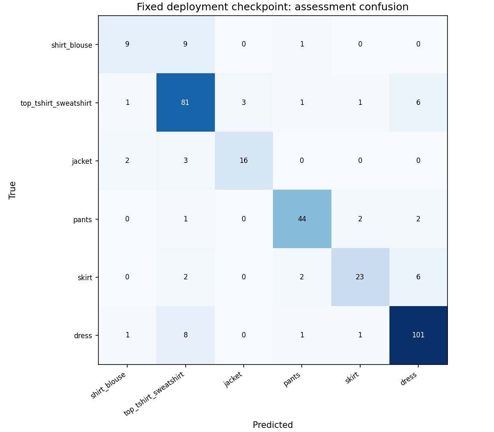
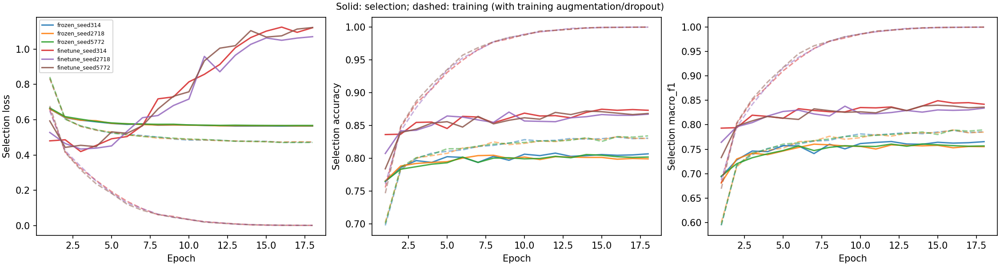
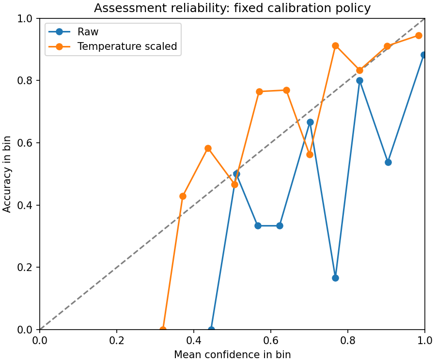
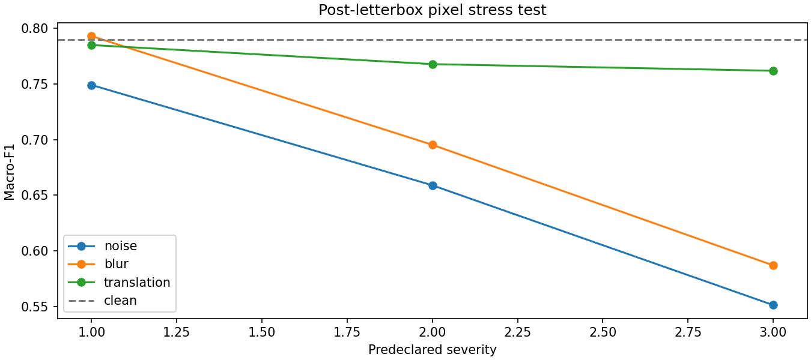

CO3133 · Assignment 1 extension · G-M10
GarmentLab.
From benchmark to garment crops.
Six-class garment crop classification with MobileNetV3-Small: a paired baseline comparison, a completed controlled regularization study, disjoint calibration and verified local serving.
Completed controlled study · 28 October 2026
More control; no demonstrated F1 gain
The second A100 study completed 20 fits × 18 epochs: eight discovery fits, six fresh-seed confirmation fits and six paired final fits. All candidates start from ImageNet weights. C4 changes the classifier dropout from 0.2 to 0.4; the other training settings match C0. The recipe is selected by mean selection Macro-F1 on confirmation seeds 202 and 303. Final seeds 314, 2718 and 5772 were fixed in advance, as was deployment seed 314.
| Recipe | Selection Macro-F1 | Reused assessment accuracy | Reused assessment Macro-F1 |
|---|---|---|---|
| C0 · dropout 0.2 anchor | 0.84245 ± 0.00597 | 82.06 ± 2.25% | 0.77472 ± 0.01493 |
| C4 · dropout 0.4 selected | 0.84347 ± 0.00383 | 81.75 ± 1.16% | 0.76638 ± 0.02258 |
The selected recipe wins the confirmation criterion narrowly, but its assessment mean Macro-F1 is lower than the anchor. The paired component-bootstrap interval for C4 minus C0 is [-0.0382, +0.0183], which includes zero. This is a descriptive interval over 221 source/duplicate components with fixed models and seeds, based on 2,000 resamples. It is not a fresh-test or post-selection-adjusted confidence claim.
Assessment remains 327 crops and had already been inspected in v1. The v2 scores are explicitly post-test exploratory regression. Model and threshold choices are frozen before this evaluation. The selected release stays C4; the assessment result is reported without changing that prior decision.
Disjoint calibration and a stricter review policy
Calibration is split by the union of source and duplicate components: 621 components/936 crops fit temperature; 622 components/899 crops select the review threshold. One metadata-selected representative per threshold component defines the risk population. A fixed 101-threshold grid uses one-sided exact binomial bounds with Bonferroni correction. The active threshold 0.88 accepts 423/622 representatives with 6 errors; the simultaneous error upper bound is 4.4388% under the stated assumptions.
| Metric | C4 seed314 raw | Temperature scaled |
|---|---|---|
| NLL | 1.5879 | 0.5159 |
| ECE, 15 bins | 0.1536 | 0.0499 |
| Brier score | 0.3300 | 0.2618 |
Temperature 5.3458 preserves class predictions. On reused assessment, the frozen policy accepts 182/327 crops, with 173 correct: 95.05% accepted accuracy at 55.66% coverage. Historical v1 accepted accuracy was 92.54% at 69.72% coverage. The policies use different models and calibration procedures, so this is an observed trade-off rather than an isolated causal comparison.
The calibration set was previously inspected in v1. Independence and future distribution assumptions have not been established, and equally weighted component representatives differ from crop-weighted traffic. No unconditional 95% accuracy guarantee is claimed.
PyTorch serving and an ONNX limitation
The returned C4 manifest records ready status after its original data, selection-quality, calibration, 64-case ONNX audit and serving protocol. The original ONNX maximum absolute logit error is 0.00009197, below 0.0001, with zero top-1 disagreements at the recorded batch sizes 1, 3 and 64. These statements describe that original protocol; they do not override subsequent broader verification.
The broader Windows check passes PyTorch and fails ONNX. Across all 327 assessment crops at batch 1, local PyTorch differs from the archived Colab outputs by at most 0.00005341, within the unchanged 0.0001 limit. The preserved ONNX artifact reaches 0.00013542, exceeding that limit. Both produce zero measured label or review-decision differences. Three additional CPU exporter/runtime variants also fail the broader criterion. The original archive is unchanged; its recorded 64-case pass is retained with that scope. ONNX remains experimental and is not the primary serving backend.
The functional demo uses PyTorch CPU. Its seven PNG checks and in-process HTTP contracts pass. A separate 60-second loopback soak completes 5,312/5,312 HTTP 200 predictions at concurrency 2, with p95 = 31.43 ms. These are repeated calls on two JPEG/crop cases; they do not measure new-image quality, a hosted SLA or production reliability. They must not be compared with historical v1 timings as a controlled speedup.
PyTorch service and broader ONNX regression · Preserved unsuccessful ONNX variants
Separately, an isolated Windows CPU environment passed dependency and service checks. A three-minute local HTTP soak completed 10,506/10,506 successful requests with p95 = 37.26 ms. That soak used the historical v1 CPU model and two repeated input cases; it is not a v2 benchmark or hosted SLA. Request logs retain request identifiers, status and duration without storing uploaded image contents.
Report: methods and results · Recorded v2 summary · Exact C4 release manifest · Calibration assumptions · Run the local application
Historical v1 study: four data roles
17,827 crops form fit (13,827), selection (1,838), calibration (1,835) and assessment (327) partitions. Source-group and duplicate checks quarantine detected cross-partition overlaps. Assessment contains 221 source groups and comes from the released validation images. It is held out from model and threshold choice.
MobileNetV3-Small uses ImageNet initialization. Both recipes run 18 epochs with paired seeds 314, 2718 and 5772. Recipe selection averages selection Macro-F1; deployment seed 314 is preset. This extension supplements the five Fashion-MNIST models trained from scratch.
Fine-tuning improves classification.
| Recipe | Assessment accuracy | Assessment Macro-F1 |
|---|---|---|
| Frozen backbone | 74.41 ± 0.18% | 0.6770 ± 0.0055 |
| Fine-tuning | 82.06 ± 2.25% | 0.7747 ± 0.0149 |
The preset seed 314 scores 83.79% accuracy and 0.7899 Macro-F1. This is a single checkpoint result. The table reports seed means. Seed SD measures training variation on one split.


Better labels need calibrated confidence.
| Metric | Raw fine-tune | Temperature scaled |
|---|---|---|
| NLL | 1.3571 | 0.4843 |
| ECE, 15 bins | 0.1339 | 0.0623 |
| Brier score | 0.2899 | 0.2487 |
Temperature 4.9225 changes probability confidence while preserving the winning class. Its threshold 0.782914 accepts 228/327 assessment crops at 92.54% accepted accuracy and 69.72% coverage. The empirical 95% calibration target does not guarantee 95% accuracy on new inputs. Temperature and threshold share one calibration partition.

Noise and blur expose remaining weaknesses.
| Condition | Severity | Macro-F1 | Coverage |
|---|---|---|---|
| noise | 1 | 0.7490 | 61.77% |
| noise | 2 | 0.6588 | 51.99% |
| noise | 3 | 0.5512 | 40.67% |
| blur | 1 | 0.7930 | 69.72% |
| blur | 2 | 0.6952 | 60.55% |
| blur | 3 | 0.5869 | 41.59% |
| translation | 1 | 0.7849 | 65.14% |
| translation | 2 | 0.7678 | 61.77% |
| translation | 3 | 0.7618 | 61.47% |

The model expects one selected garment crop in its supported label space. It has not been evaluated as an object detector, on arbitrary smartphone photographs, or in production traffic. Small class support and multiple crops from common sources limit statistical conclusions.
Export checks caught a numerical mismatch.
The returned A100 research run completed all evaluations. Its ONNX artifact exceeded the preset absolute-logit limit: 0.000154495 versus 0.0001, with no top-1 disagreements in the 64-case audit. The release correctly retained candidate status.
A separate Windows CPU re-export disables exporter optimization and passes the unchanged limit. Maximum logit error against the original saved PyTorch reference is 0.00008297 in the original audit. The full 327-case check preserves every predicted label and accepted/review decision. PNG preprocessing and the actual local API contracts also pass. This derived release is ready for the declared local crop-classification application. The original returned candidate remains unchanged.
New CPU forward-only medians are 6.52 ms for PyTorch and 5.48 ms for ONNX Runtime, with one CPU thread, five warmups and 30 calls. These exclude image decoding and HTTP. They do not establish a speedup over a different machine or the original export.
Exporter diagnosis and measured trade-off · Verified publication data. The static site presents results. The inference application runs separately through the local API.
Materials and attribution.
- Methods and result interpretationAnalysis
- 326 independent numeric checksEvidence
- 38 protocol checksEvidence
- Local inference and CPU export reproductionGuide
AI assisted LaTeX writing and pipeline development. Full disclosure.
Sources: Fashionpedia dataset, MobileNetV3, temperature scaling, PyTorch ONNX exporter.